Hey everyone! Lot’s of stuff has been happening recently, and so I thought I’d fill everyone in on what’s going on!
Firstly some playtest photos:
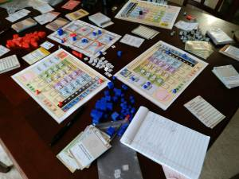 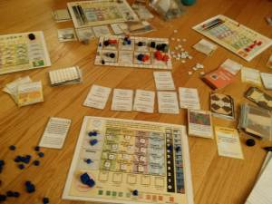 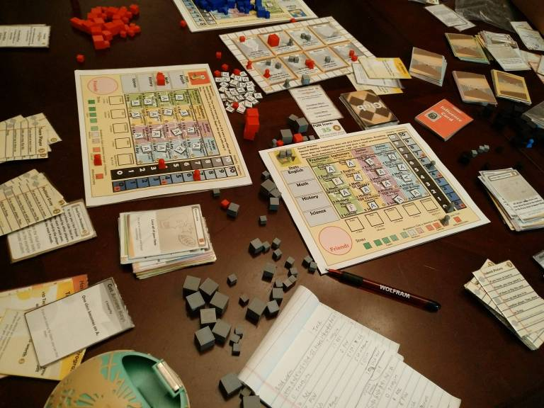 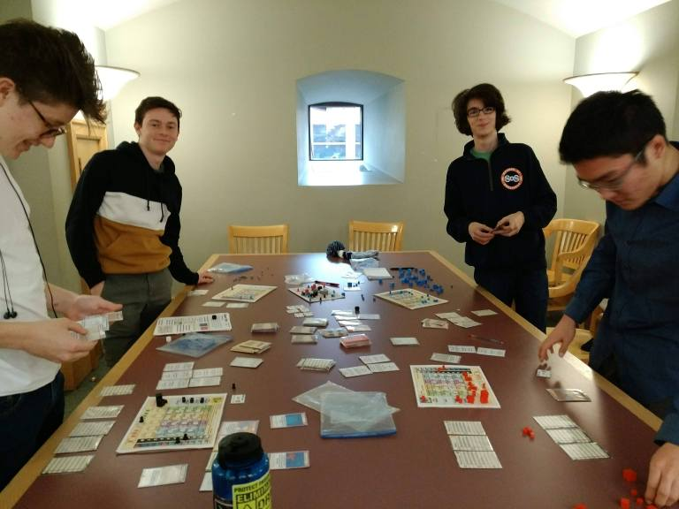 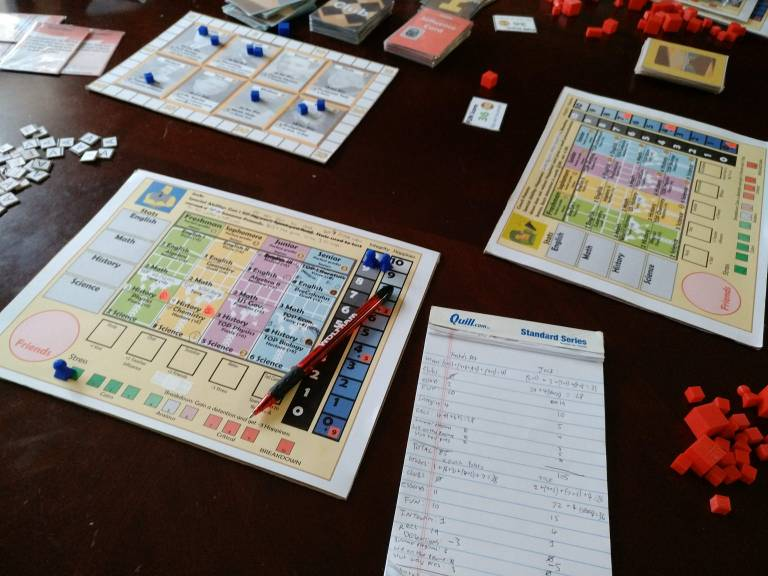 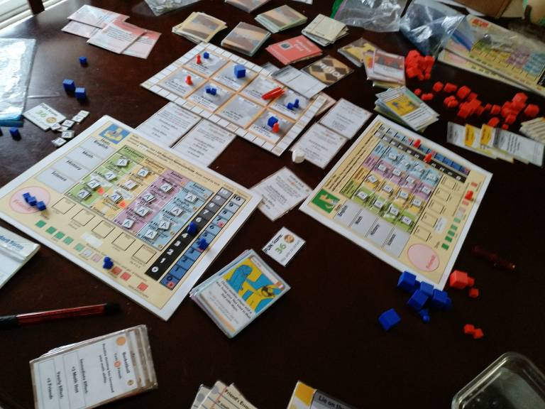 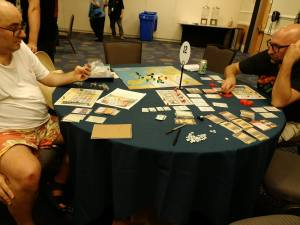 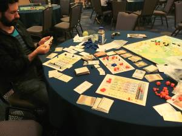 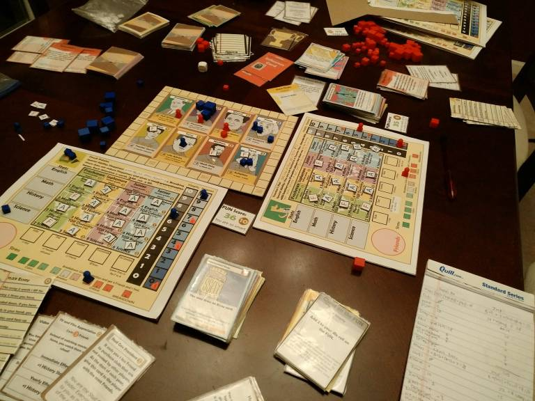Yep, that’s right- a new teacher board! In addition, the card art is now 100% complete, colored, upscaled, and at acceptable resolution. One of the issues with the card art that caused such a long delay in completion was the fact that the card art was not at a high enough resolution. Here is an example:
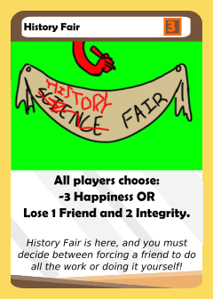 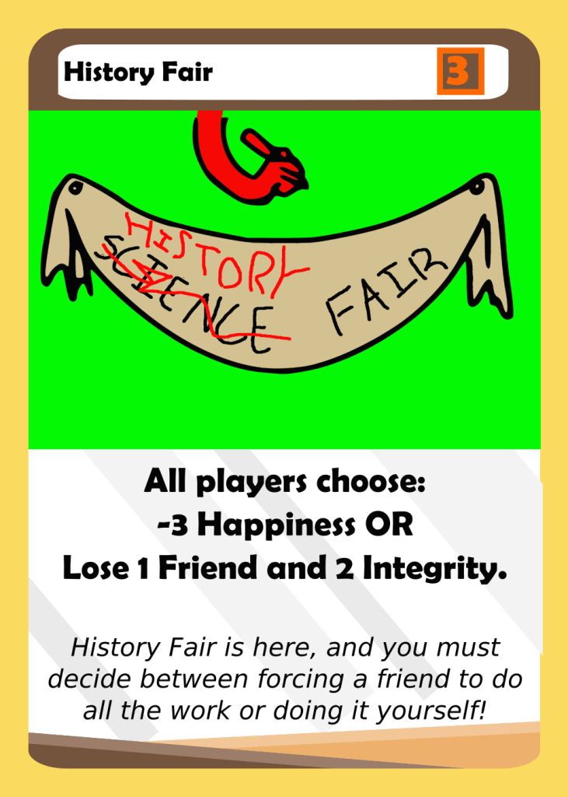On the digital screen, the difference in resolution is not very noticeable and actually passes fairly well. In fact, the picture on the left has already been upscaled, but generally digital photos can look sharp at 72 dpi without much problem. Here’s some examples, except printed out:
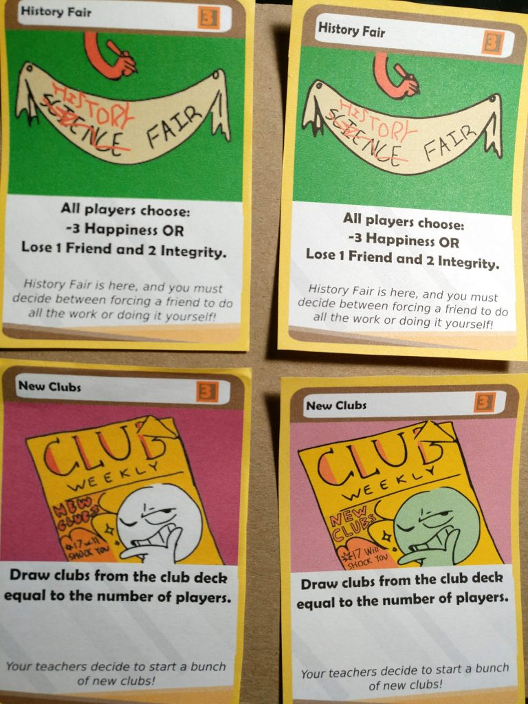The card art still looks great on both cards, which is a testament to how well drawn the original art really is. However, it’s clearly fuzzier and harder to make out on the left side. While I thought that this was due to my crappy home printer, it turns out that the issue was more complex as both the left and right side cards were printed by my home printer. The difference is that the right side art went through a process of vectorizing the black and white art, then being recolored and redrawn in some areas. I plan to write up a more detailed blog post about this process, but essentially the end result was 300 dpi resolution artwork- or “print resolution”. Shoutout to Eric Say for helping me correct the resolution before print- and also for teaching me how to increase the card art resolution (you can find his graphic design twitch stream here).
This is why a lot of print shops highly recommend only printing artwork 300 dpi or greater: even if it looks great on the computer, the print could easily come out too low quality on paper. I honestly am not really sure why this occurs, but I’m glad the issue here was fixed. Finally, the box art is also completed which means that the only things to be done before a print run are touching up the graphic designs of the character boards and the cards if needbe, and balancing the characters! Speaking of which,
Characters:
I’ve now played a couple more multi-player games with the 4 characters, and also played 1v1 against myself in each possible pairing of character. I made changes along the way, but they were mostly minor save for a large nerf to jock. Even so, Jock continued to perform well.
(Changes, for those interested: Teacher’s Pet begins the game with 5 Teacher Influence and can freely rearrange their Teacher Influence. Bookworm no longer begins with 3 Stats and has 2 fewer RP potential from classes as well as slightly nerfed teacher influence bonuses for correcting Senior year classes and the Junior/freshman year English classes. Jock had their number of TOP classes reduced, and also only gets friends from correcting TOP Classes, but begins the game with 3 Friends. Couch Potato breakdowns are -3 RP instead of -1 RP and procrastinate gives +4 Stress, not +3 Stress).
Two player games:
| Teacher’s Pet | Couch Potato | ||
| Grades | 30 | Grades | 44 |
| Integrity | 1 | Integrity | 7 |
| Rec | 41 | Rec | 11 |
| FUN | 8 | FUN | 10 |
| Clubs | 4 | Clubs | 36 |
| Essays | 3 | Essays | 22 |
| Detentions | 0 | Detentions | -6 |
| Summer Programs | 0 | Summer Programs | 3 |
| Stud Gov President | 0 | Stud Gov President | 3 |
| Lie on the Resume | 0 | Lie on the Resume | 5 |
| Total: | 87 | Total: | 135 |
| Teacher’s Pet | Jock | ||
| Grades | 41 | Grades | 31 |
| Integrity | 4 | Integrity | 5 |
| Rec | 28 | Rec | 4 |
| FUN | 10 | FUN | 10 |
| Clubs | 0 | Clubs | 28 |
| Essays | 2 | Essays | 19 |
| Detentions | 0 | Detentions | 0 |
| Summer Programs | 0 | Summer Programs | 3 |
| Stud Gov President | 0 | Stud Gov President | 0 |
| Lie on the Resume | 0 | Lie on the Resume | 5 |
| Total: | 75 | Total: | 105 |
| Couch Potato | Jock | ||
| Grades | 28 | Grades | 26 |
| Integrity | 1 | Integrity | 1 |
| Rec | 19 | Rec | 0 |
| FUN | 10 | FUN | 4 |
| Clubs | 0 | Clubs | 36 |
| Essays | 11 | Essays | 15 |
| Detentions | -3 | Detentions | -5 |
| Summer Programs | 3 | Summer Programs | 0 |
| Stud Gov President | 3 | Stud Gov President | 0 |
| Lie on the Resume | 0 | Lie on the Resume | 0 |
| Total: | 72 | Total: | 77 |
Total results:
B vs J: Jock (119-94)
B Vs. C: Couch Potato (93-90)
B Vs. T: Bookworm (126-62)
T Vs. C: Couch Potato (135-87)
T Vs. J: Jock (105-85)
C vs J: Jock (77-72)
Which indicates Jock > Couch Potato > Bookworm >>> Teachers Pet. And these results persisted after the last three play tests, which were conducted using balance changes! This makes these results weird:
4 player games: Couch Potato (97), Bookworm (73 on tiebreakers), Bookworm (game ended after sophomore year).
My theory is that 4 player games hurt the Jock, as resume points from clubs can be easily stolen. This makes the Jock weak in a 4 player game as players can deny the Jock any points. On the other hand, Bookworm’s points from grades can’t be taken away, which makes the Bookworm stronger in a game with a lot of player interaction.
I also think that these playtests should be taken with a grain of salt. After all, changes were made inbetween almost every game, and so the characters did not maintain the same levels of strength. Another issue is the bias introduced by me playing against myself- which obviously occurs in a game where there is hidden information. This can be easily shown by the low rates of breakdown when I play against myself. Still, I overall gathered useful info: Nerf Jock, slightly nerf Couch Potato, keep Teacher’s Pet at the same level, and significantly buff Teacher’s Pet. In addition, modify Jock’s ability to perform better in a multiplayer game. With these goals in mind, here are my proposed character changes:
Jock’s ability: Gain 2 Friends each time you test correct a TOP Class. Other players cannot purchase Sport clubs that you lead from you. Begin the game with 3 Friends.
Notes: This fixes the significant scaling problems I had with giving the Jock good TOP Classes Junior and Senior year. By making the amount of Friends gained constant, I can keep the Jock in check and thus give the Jock a more normal high school schedule. Overall I have given the Jock 8 TOP Classes, which amounts to a potential 24 Friend bonus, which is not too shabby. Previously, the bonus was around 30ish potential friend bonuses, but now the bonuses are more evenly distributed among the 4 years. By making Sports not be purchasable, it also helps the Jock get some guaranteed RP to work with for a multi-player game.
Bookworm’s Ability: You may treat any Stat as if it were any other Stat for the purpose of Test Corrections.
Notes: Bookworm honestly doesn’t need to begin the game with 3 Stats. It’s too much of a handicap, especially when Bookworm gets 4 free Math stat from correcting TOP Calculus to an A. I hope this gives Bookworm a bit more decision making to do than spamming Test correct and Study, and then doing whatever else Freshman year.
Couch Potato’s Ability: Happiness gives reduced stress penalties. Breaking down only reduces Happiness by 1 and gives 4 Friends and 1 Stat. Each detention is worth -3 RP, not -5 RP.
Notes: In addition to this change, low happiness gives +2/+4/+7 stress. Couch Potato used to basically get a free pass on breaking down and having low happiness, which I didn’t think was a huge deal. Recently though, I’ve been using Couch Potato to abuse the Happiness mechanic a bit too much. Even though this seems like a slight nerf, it will make it a lot harder to grab every yellow influence card in the game and sit on 2 Happiness and feel absolutely no pressure to deal with detentions. I still think it’s good to breakdown. It’s just now a more complex decision to make. This seems to go against my previous thinking of trying to get Couch Potato to breakdown as much as possible, but I hope it actually makes it more viable. In the past, it was just too difficult to gain stress to breakdown more than a handful of times, so it was often better to just ignore the stress bar entirely.
Teacher’s Pet: Each time any player gets a Rec, gain 5 Teacher Influence. You are not limited to 2 Teacher Recs. You may re-arrange your Teacher Influence on your turn. Begin the game with 6 Teacher Influence in any one teacher.
Notes: Wow! This means that Teacher’s Pet can gain a max of 40 bonus TI. I think it’s a healthy change though, because in prior games the Teacher’s Pet has lost by a margin of at least 20 points and has overall been really sucky. While I think this is in part due to the Teacher’s Pet being a difficult character to play, (in my opinion, it’s the most challenging character) I think it was just overall way too underpowered. Will this change make the Teacher’s Pet super good? I actually don’t think so. Teacher Influence tends to be broken in the early game, but starts getting worse as time goes on. Eventually, the club deck runs out and teachers like Franklin become obsolete. This makes an interesting tradeoff. Teacher’s Pet can get the most out of their ability by picking up Teacher Recs early in the game, and it becomes viable due to the 5 Teacher Influence rebate. However, this comes at the cost of not being able to buy clubs or develop an engine at the beginning of the game. At the same time, if the Teacher’s Pet waits until senior or junior year, the teacher influence will be worth less. I’m very interested to see how this ability plays out.
And there you have it! I hope you enjoyed this massive update. What do you think of the proposed changes to the characters? I plan to playtest them over the next few days, so make sure to leave your suggestions in the comments. Thanks for reading, and make sure to subscribe if you enjoy this content!